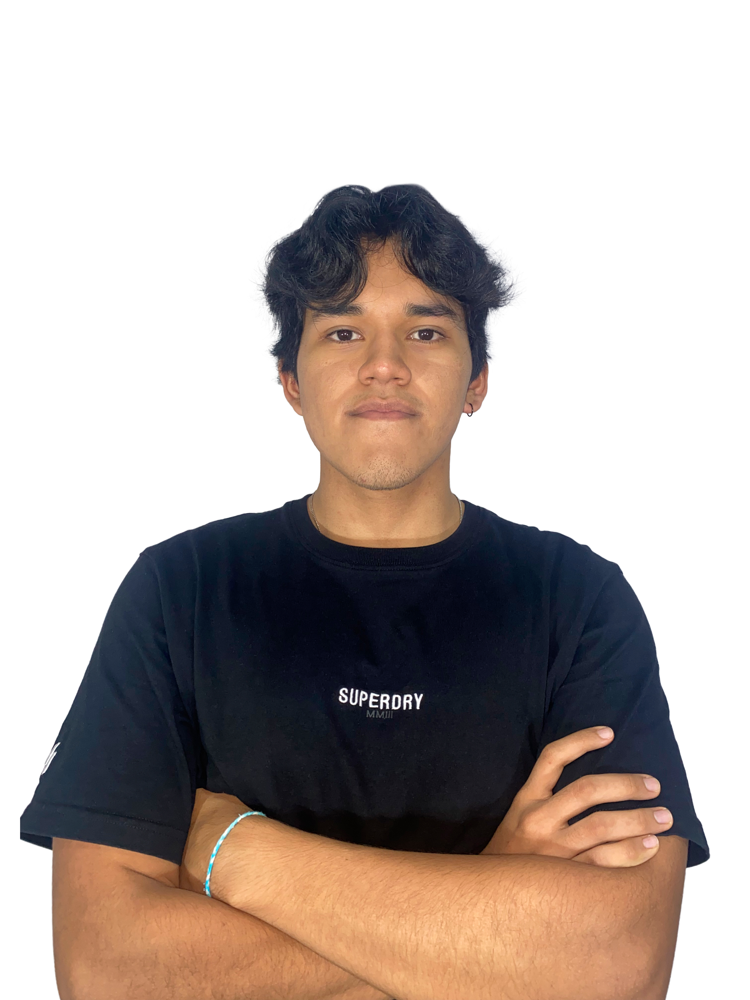

"Mi nombre es Hugo Daniel Velasco, tambien conocido por TronksMark
en diferentes plataformas digitales, soy de la ciudad de Mocoa - Putumayo,
Colombia.
Vengo trabajando en el mundo del diseño por más de 4 años,
actualemnte soy estudiante de diseño visual y en el mundo laboral
trabajo como freelance."
Manejo de herramientas digitales
Adobe Photoshop
Adobe Illustrator
Adobe Premiere Pro
DISEÑOS ARTÍSTICOS 01 - 30

THE NINETIES - 01

ULTRVIOLETA - 02